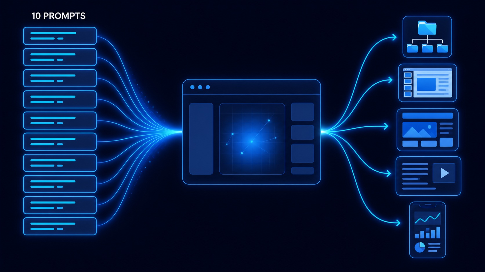
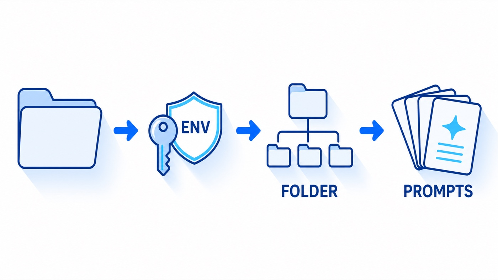
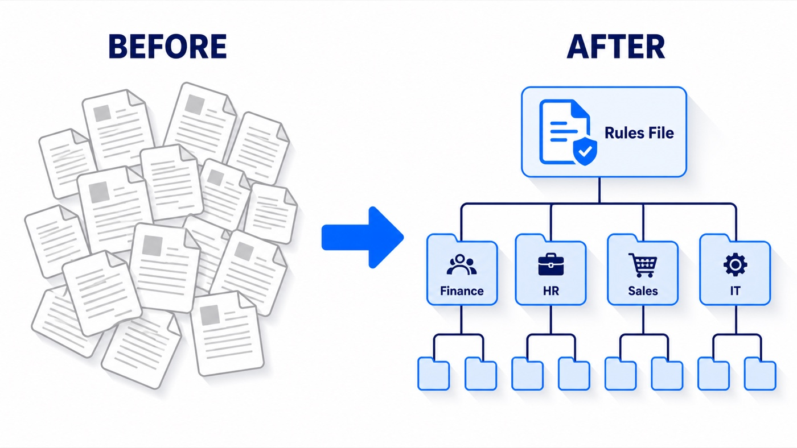
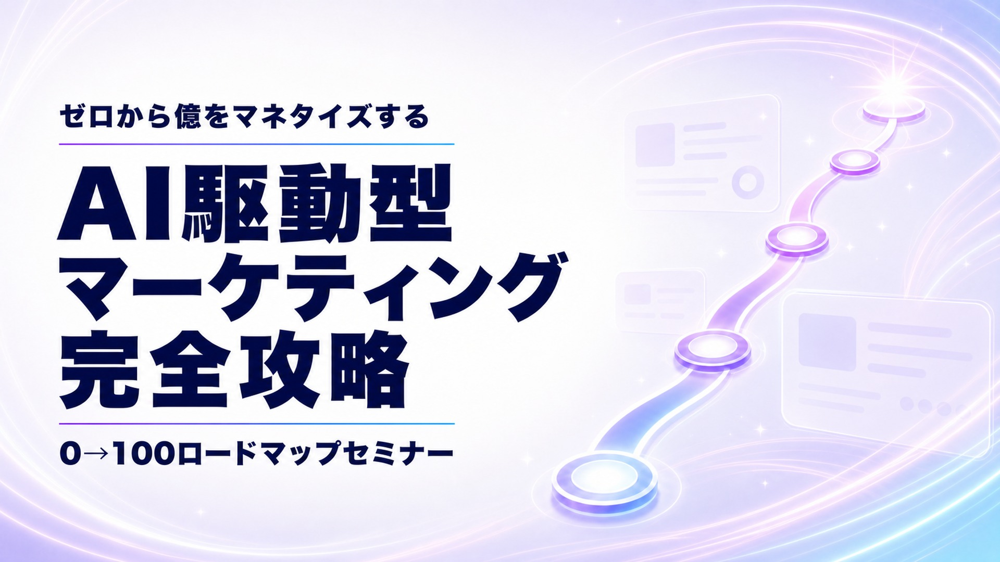
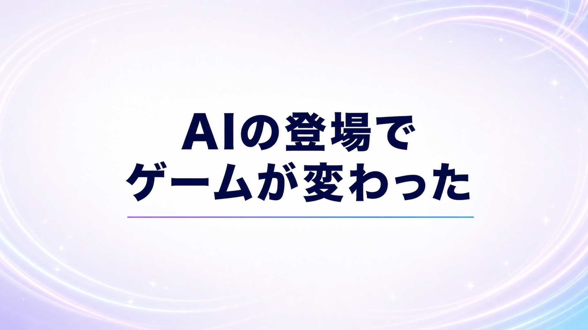
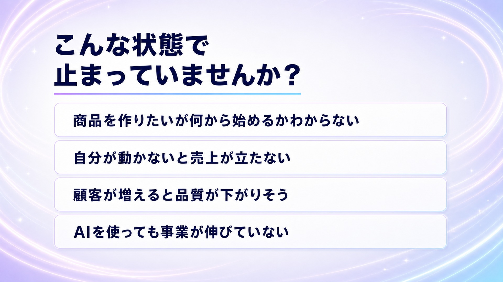
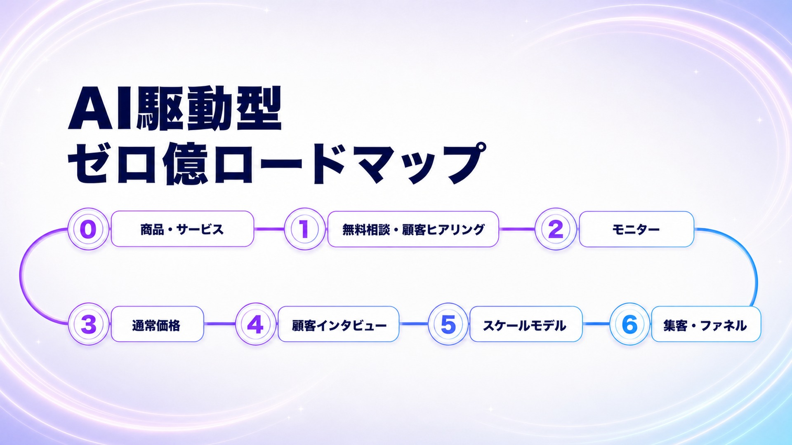
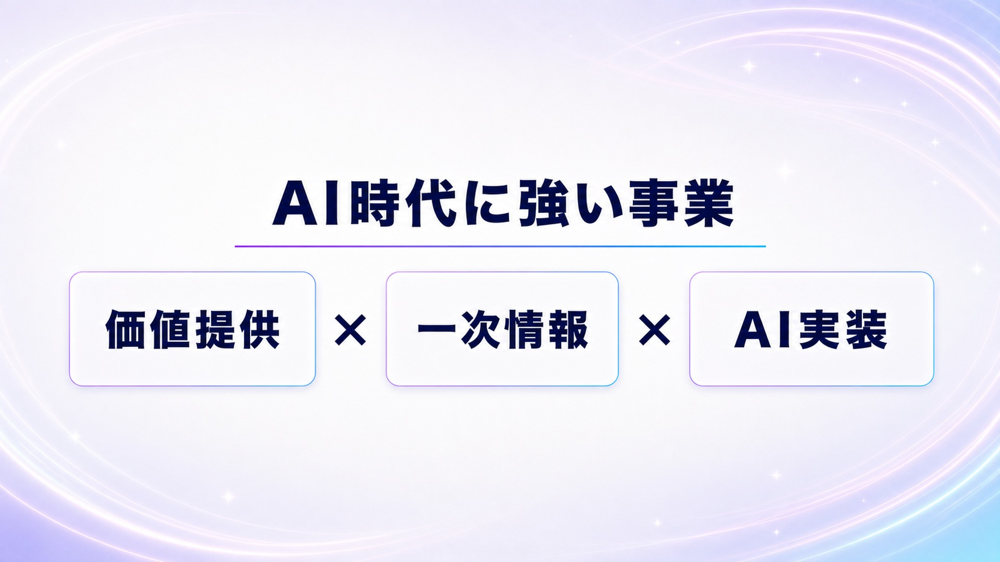
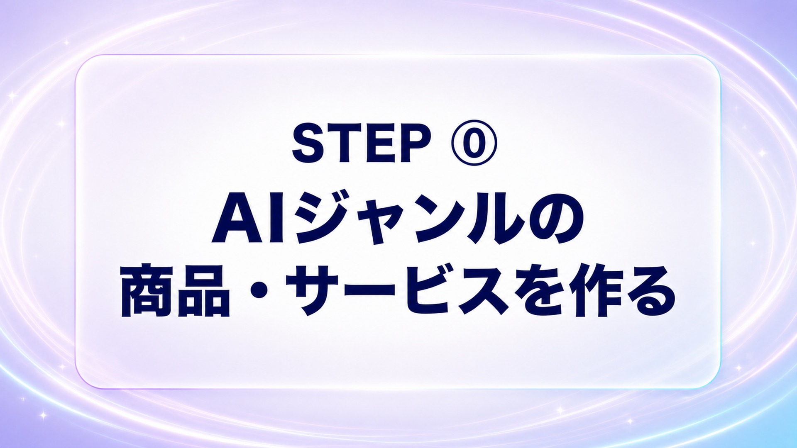
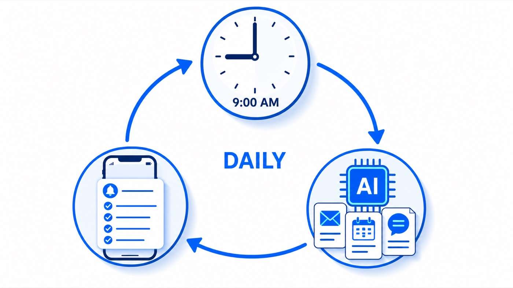

保存版資料のお受け取り、ありがとうございます。この資料には、本編で紹介した10本のプロンプトの全文を、そのままコピペできる形でまとめています。長いプロンプトも一字も削らず全文入っています。見ながら、そのまま貼ってください。

START
最初にこの章だけ読んでください。10本すべてに共通する前提です。
この資料のプロンプトは、全部 Codex または Claude Code に貼る前提で書いてあります。Codex（ChatGPTデスクトップアプリの中にある、パソコンの中のファイルを触れるAI）か、Claude Code（Anthropic社の、同じくパソコンの中のファイルを触れるAI）のデスクトップアプリで使ってください。ChatGPTやClaudeの普通のチャット画面に貼っても動きません。パソコンのファイルを触れないからです。

名前はなんでもいいですが、本編と同じ「Codex用フォルダ」にしておくと迷いません。10本は全部この中でやっていきます（.env・フォルダ構造・スキルがここに溜まっていきます）。
ChatGPTのデスクトップアプリを開いて、Chatじゃなくて Codex に切り替えて、作ったフォルダを開きます。Claude Codeの人は、Claude Codeのデスクトップアプリで同じフォルダを開けばOKです。
ChatGPT デスクトップアプリ Claude デスクトップアプリプロンプトごとに新しいスレッド（Claude Codeなら新しいセッション）で貼ってください。1と2が土台なので、順番どおりが一番つまずきません。
PROMPT 01
APIキーを安全に保存する場所を作ります。ここが10本の土台です。
API（外部のサービスとAIを連携する仕組み）を繋ぐと、Codexができることが一気に増えます。例えばYouTubeのAPIを繋ぐと、再生数やコメントを直接取ってこれるようになります。画像を作るのもリサーチも、裏では全部このAPIを使います。
その連携に必要なのがAPIキー（サービスごとに発行される、自分専用の暗証番号）です。APIキーはパスワードと同じで、チャットに貼るとログに残ります。なので .env（エンブ）という隠しファイルに置いて、AIにはそこを読ませて、チャットには絶対に貼らない。このプロンプトは、その保存場所を作って、「値は表示しない」「勝手に送らない」というルールまでAIに書かせます。
これを入力すると、使うサービスを聞かれるので答えます（本編ではYouTubeとOpenAIにしました）。.envができて、キーを貼るところで止まるので自分で貼ります。貼ったら、AIが「埋まっているか・文字数」だけ確認して、読み取りのテストをしてくれます。
# APIキーの置き場所（.envファイル）を作ってください あなたは、私のパソコンのこのフォルダで作業するAIエージェントです。 外部サービスのAPIキーを安全に置く「.envファイル」の仕組みを作ってください。 これ以降、私は「.envにキーが入っている前提」で色々な仕事をあなたに頼みます。 ## 最優先の安全ルール 1. APIキーやトークンの「値」を、チャット・ログ・ファイル名・報告文に絶対に出さない。確認が必要な時は「設定済み／未設定」と「文字数」だけを答える 2. .env を cat や Read で丸ごと読まない（読むと値が画面と会話ログに残る）。確認は「変数名と文字数だけを出すコマンド」で行う 3. もし私がチャットにキーの値を貼ってしまったら、復唱も保存もせず「そのキーは公式画面で再発行して、古い方は無効にしてください」と案内する 4. 分からない仕様は推測で埋めず「未確認」と言う。URLは公式サイトで確認できたものだけ書き、確認できなければ「公式サイトで『サービス名 API key』を検索」と案内する ## 手順（質問は手順2の1回だけ。例外は手順1でフォルダの場所が悪い時だけ止まってよい。あとは止まらず進め、手順7で私が「貼りました」と言うまで待つ） 1. 今いるフォルダを表示し、.env / .env.example / .gitignore が既にあるか表で報告する。今いる場所がホーム直下・デスクトップ・書類直下や、iCloud Drive / OneDrive / Dropbox / Google Drive の同期対象の中なら、ホーム直下に `Codex用フォルダ`（動画と同じ名前）を作ることを提案し、私のOKを待つ。作ったら「Codex（またはClaude Code）でそのフォルダを開き直してから、このプロンプトをもう一度貼ってください」と案内して止まる（開いているフォルダの外では続けない） 2. 私が使う予定のサービスをまとめて聞く（例: YouTube Data API / X API / OpenAI / Google / Chatwork） 3. .env.example（変数名=のみ。値なし。変数名は各サービスの公式が使う標準名。例: OPENAI_API_KEY / YOUTUBE_API_KEY / X_BEARER_TOKEN / CHATWORK_API_TOKEN）を作り、それをコピーして .env を作る（.env が既にある場合は上書きせず、足りない変数名の行だけ追記する）。値は私が自分で貼る。あなたはキーの値を作らない・推測しない 4. .gitignore に `.env` `.env.*` `!.env.example` をこの順で追記する（既にある行は飛ばす）。このフォルダがGit管理されていなくても作る（あとでGitを使い始めた時に .env が漏れないための保険） 5. サービスごとに「公式の発行ページの名前と、キーを取る大まかな手順、料金の有無」を3行以内で案内する。従量課金のサービスは、公式画面で月の上限額を設定するよう促す。キーの発行に10〜20分かかることがあると先に伝える 6. .env を私が編集できるように開く。.env は隠しファイルで普段は見えないことを先に伝える。Mac: あなたが `open -e .env` を実行してテキストエディットで開く（実行できなければ「Finderでこのフォルダを開き Command+Shift+. を押すと .env が見える。ダブルクリックで開く」と案内する）／Windows: `notepad .env`（保存時に `.txt` が付いていないか確認してもらう） 7. 私が「貼りました」と言ったら、変数名／設定済みか未設定か／文字数 の表で確認する（値は出さない）。設定済みのキー1つで、読み取り専用の疎通確認を1回だけ行い、成功／失敗だけ報告する（例: OpenAI=モデル一覧の取得、YouTube=公開チャンネル1件の取得） 8. このフォルダのルールファイルに次のルールを追記する。CLAUDE.md（Claude Code用）と AGENTS.md（Codex用）のどちらも無ければ、両方作って同じ内容を書く: - 認証情報は .env ファイルから読む。コードやチャットに直接書かない - 外部への送信・投稿・削除・課金は、私が「はい」と言うまで実行しない - 新しいAPIやMCPを繋ぐ時は「読み取り → 下書き → 限定的な書き込み」の順で広げる ## 完了報告 - 作った／直したファイル（.env / .env.example / .gitignore 等）の**フルパスを1行ずつそのまま貼る**（私がクリックして開けるように） - .env の変数名と「設定済み／未設定」（値は出さない）、疎通確認の結果 - 私が次にやること（まだ空の変数の取り方）
PROMPT 02
AIが作業するフォルダの構造を一撃で作ります。
AIの出力の質は、指示出しの質と、渡す情報の質の掛け算で決まります。みんな指示出しは頑張るんですが、情報の整理ができていない。情報をごちゃごちゃのまま渡すと、AIはどこを見ればいいか分からなくて、出力が一般論になります。なのでフォルダを整理して、情報の置き場所を決めます。

プロンプトの前半に、名前・事業・部署の分け方などを埋める欄があります。そこだけ埋めて貼ります。分け方のヒントも例も、プロンプトの中に書いてあります。
フォルダの中身をスキャンして、足りない情報を質問されるので答えます。ファイルが既に入っているフォルダで実行した場合は、移動の計画表を見せてくるので、確認して「OK」と伝えます（ファイルの中身は変わりません。名前が日付つきに整えられることはあります）。
あなたはAI経営コンサルタントです。このフォルダを「AI経営フォルダ」として、完璧なディレクトリ構造を自動構築してください。
# ===================================
# 最重要方針 v1.1: パス最適化とコンテンツ維持
# ===================================
このプロンプトの目的は、既存コンテンツを勝手に書き換えることではありません。
ディレクトリ構造の変化に合わせて、参照先・保存先・スキル配置・ナレッジ配置のメタ情報を最新化することです。
必ず守ってください:
- 何かを保存・移動・追記する前に、まず `directory.md` があるか確認し、存在する場合は必ず読む
- `directory.md` が存在しない場合だけ、このプロンプト内の構造テンプレートを正本として生成する
- 古い固定パスを前提にしない。`rg --files`、`find`、実ファイルの読み込みで、現在存在するパスを確認してから処理する
- スキル本体のプロンプト内容、ナレッジ本文、教材本文は原則変更しない
- 更新してよいのは、パス、参照先、配置先、INDEX、README、frontmatter、関連タスク、directory.md / CLAUDE.md / AGENTS.md のメタ情報
- `.claude/skills/` は互換・過去資産として扱い、正本配置は `📦事業部/{事業部名}/{部署または業務}/スキル/` または `📦事業部/{事業部名}/事業部管理/スキル/` を優先する
- ナレッジ元本は移動しない。事業部で使う場合は `ナレッジ/コピー候補/` にコピーし、先頭に `source:` と `target_task:` を残す
- どの事業部・部署・継続タスクで使うか不明なスキルやナレッジは、勝手に移動せず「要確認リスト」に入れる
# ===================================
# 📋 あなたの事業情報（ここを埋めてください）
# ===================================
## 基本情報
- 名前: （例: 山田太郎）
- 屋号/法人名: （例: 株式会社〇〇 / 個人事業主）
- 事業の一言説明: （例: SNSマーケティングのコンサルティング事業）
## 事業部の定義（あなたの事業を「部署」に分けてください）
# 分け方のヒント: 「誰かに丸投げできる単位」で分ける
# 例1: コーチング事業なら → SNS集客部 / 商品部 / セールス部 / 顧客対応部 / 経理部
# 例2: EC事業なら → 仕入部 / 商品開発部 / 集客部 / カスタマーサポート部 / 経理部
# 例3: コンテンツ販売なら → コンテンツ制作部 / 集客部 / セールス部 / 受講生対応部 / 経理部
# 最初は3〜5個で十分です。後からいくらでも追加できます。
事業部リスト:
1. （例: SNS事業部）— 担当範囲の説明（例: YouTube/X/Instagram での集客・発信全般）
2. （例: 商品事業部）— 担当範囲の説明（例: 講座・コンサル・コンテンツの企画運営）
3. （例: セールス部）— 担当範囲の説明（例: セミナー販売・LP・個別相談）
4. （例: 経理部）— 担当範囲の説明（例: 請求・入金管理・確定申告準備）
5. （必要なら追加）
## SNSで使っている媒体（該当するものだけ残してください）
- YouTube / X（Twitter）/ Instagram / Threads / TikTok / Facebook / Note / Voicy / LINE / メルマガ
## 商品ラインアップ（現在販売中 or 企画中のもの）
1. （例: AIマーケティング講座 — 月額5万円のオンラインスクール）
2. （例: 個別コンサル — 1回3万円の単発相談）
3. （必要なら追加）
# ===================================
# 🔧 以下はAIへの実行指示（編集不要）
# ===================================
## Phase 1: 現状スキャン
このフォルダ内の全ファイルを走査し、以下を把握してください:
- ファイル総数、種類（.md / .txt / .docx / .pdf / 画像 / 音声 / 動画 / その他）
- 各ファイルの内容を簡易分析（タイトル・冒頭200文字を読む）
- ナレッジテンプレート3種（パーソナル/プロダクト/コンテンツ）の有無を確認
- 既存の正本ファイル（`directory.md` / `CLAUDE.md` / `AGENTS.md` / `CODEX.md` / `タスク管理ルール.md`）の有無を確認
- スキル候補の所在を確認（`.claude/skills/`、`📦事業部/**/スキル/`、`📦事業部/**/事業部管理/スキル/`）
- ナレッジ候補の所在を確認（`🌐共通ナレッジ/`、`📦事業部/**/ナレッジ/`、`📦事業部/**/ナレッジ/コピー候補/`）
スキャン完了後、以下を報告してください:
- 「〇〇個のファイルを確認しました」
- 「ナレッジテンプレート: パーソナル[有/無] / プロダクト[有/無] / コンテンツ[有/無]」
- 「正本ファイル: directory.md[有/無] / CLAUDE.md[有/無] / AGENTS.md[有/無]」
- 「スキル候補: .claude配下〇件 / 事業部配下〇件」
- 事業情報の不明点があれば最大5つまで質問（それ以上は聞かない）
## Phase 2: ディレクトリ構造の構築
上記の事業情報をもとに、以下の構造を構築してください。
### 構築するフォルダ構造
```
{AI経営フォルダ名}/
│
├── .claude/ ← Claude Code設定・互換ハーネス（自動生成）
│ └── rules/
│ └── ARCHITECTURE.md ← 設計思想（自動生成）
│
├── CLAUDE.md ← Claude Codeが毎回読むエントリポイント（自動生成）
├── AGENTS.md ← Codexが毎回読むエントリポイント（Codex利用時に自動生成）
├── directory.md ← 出力先判断マップ（自動生成）
├── タスク管理ルール.md ← タスク運用ルール（自動生成）
│
├── 🌐共通ナレッジ/ ← 事業部横断の知識ベース
│ ├── _INDEX.md
│ ├── 📌共通ナレッジ/ ← AIが加工・体系化した横断知識
│ │ ├── パーソナルナレッジ/ ← あなた自身の人格・価値観・経験
│ │ │ ├── _INDEX.md
│ │ │ ├── 01_価値観.md
│ │ │ ├── 02_経歴_実績.md
│ │ │ ├── 03_専門領域.md
│ │ │ ├── 04_発信スタイル.md
│ │ │ └── 05_原体験.md
│ │ │
│ │ ├── プロダクトナレッジ/ ← 商品設計・ペルソナ・差別化
│ │ │ ├── _INDEX.md
│ │ │ ├── 01_ペルソナ.md
│ │ │ ├── 02_USP_差別化.md
│ │ │ ├── 03_商品設計.md
│ │ │ ├── 04_価格戦略.md
│ │ │ └── 05_オファー設計.md
│ │ │
│ │ ├── コンテンツナレッジ/ ← 文体・口調・コンテンツの型
│ │ │ ├── _INDEX.md
│ │ │ ├── 01_文体_口調ルール.md
│ │ │ ├── 02_コンテンツ型集.md
│ │ │ ├── 03_発信戦略.md
│ │ │ └── 04_FB集約.md
│ │ │
│ │ ├── タスク攻略ナレッジ/ ← 各タスクのHow-to知識
│ │ │ ├── _INDEX.md
│ │ │ ├── Webマーケ理論/
│ │ │ ├── AIツール活用/
│ │ │ └── ビジネス_経営/
│ │ │
│ │ └── 情報源_リサーチ/ ← 調査結果・競合分析
│ │ └── _INDEX.md
│ │
│ └── 📌コンテンツ元本/ ← 外部ツールからの未加工データ
│ ├── _INDEX.md
│ └── {SaaSごとのフォルダ}/ ← Google_Docs/ LINE/ Zoom/ 等、使っているものだけ作る
│
├── 📦事業部/ ← あなたの事業部群（ここが本体）
│ ├── _INDEX.md
│ │
│ ├── {事業部1の名前}/
│ │ ├── タスク.md ← この事業部のタスク一元管理
│ │ ├── 事業部管理/ ← 管理系情報を集約
│ │ │ ├── _INDEX.md
│ │ │ ├── スキル/ ← 事業部横断・管理系スキル
│ │ │ ├── スキルカタログ/
│ │ │ ├── ナレッジ/
│ │ │ ├── SOP/
│ │ │ ├── 議事録/
│ │ │ ├── 学び/
│ │ │ └── タスクアーカイブ/
│ │ ├── {部署または業務フォルダ}/ ← 実務を進める単位
│ │ │ ├── _部署OS.md
│ │ │ ├── _継続タスク.md
│ │ │ ├── ナレッジ/
│ │ │ │ ├── _INDEX.md
│ │ │ │ └── コピー候補/ ← 共通ナレッジからの業務用コピー
│ │ │ ├── スキル/ ← この業務で使うAIスキル
│ │ │ │ └── _INDEX.md
│ │ │ ├── 手順書/
│ │ │ └── 改善ログ.md
│ │ └── {必要な部署・媒体・商品を追加}
│ │
│ ├── {事業部2の名前}/
│ │ └── （同上の構造）
│ │
│ └── {事業部Nの名前}/
│ └── （同上の構造）
│
└── 🗂️アーカイブ/ ← 過去データ・参照対象外
└── _INDEX.md
```
### 事業部内サブフォルダの設計ルール
事業部ごとに、その事業部の機能に合わせたサブフォルダを作ってください。
各事業部の直下は `タスク.md`、`事業部管理/`、部署または業務フォルダを基本形にします。
スキルとナレッジは、単に置くだけでなく「どの継続タスクで使うか」まで `_継続タスク.md` と `タスク.md` に接続してください。
**SNS系事業部の場合:**
```
SNS事業部/
├── タスク.md
├── 事業部管理/
│ ├── スキル/
│ ├── スキルカタログ/
│ └── ナレッジ/
├── YouTube/ ← 媒体別
│ ├── _部署OS.md
│ ├── _継続タスク.md
│ ├── 企画/
│ ├── 台本/
│ ├── サムネイル/
│ ├── リサーチ/
│ ├── ナレッジ/
│ │ └── コピー候補/
│ └── スキル/
├── X/
│ ├── _部署OS.md
│ ├── _継続タスク.md
│ ├── 投稿/
│ ├── リサーチ/
│ ├── ナレッジ/
│ └── スキル/
├── Instagram/
│ ├── _部署OS.md
│ ├── _継続タスク.md
│ ├── リール/
│ ├── フィード/
│ ├── ストーリーズ/
│ ├── ナレッジ/
│ └── スキル/
└── {使っている他のSNS}/
```
**商品・プロダクト系事業部の場合:**
```
商品事業部/
├── タスク.md
├── 事業部管理/
│ ├── スキル/
│ ├── スキルカタログ/
│ └── ナレッジ/
├── {商品名1}/
│ ├── _部署OS.md
│ ├── _継続タスク.md
│ ├── カリキュラム/
│ ├── 教材/
│ ├── 受講生対応/
│ ├── ナレッジ/
│ │ └── コピー候補/
│ └── スキル/
├── {商品名2}/
│ └── （同上）
└── CS_サポート/
├── _部署OS.md
├── _継続タスク.md
├── 質問対応/
├── ナレッジ/
└── スキル/
```
**セールス系事業部の場合:**
```
セールス部/
├── タスク.md
├── 事業部管理/
│ ├── スキル/
│ └── スキルカタログ/
├── セミナーセールス/{_部署OS.md, _継続タスク.md, ナレッジ, スキル}
├── 個別相談/{_部署OS.md, _継続タスク.md, ナレッジ, スキル}
└── LP_セールスページ/{_部署OS.md, _継続タスク.md, ナレッジ, スキル}
```
**経理系事業部の場合:**
```
経理部/
├── タスク.md
├── 事業部管理/
│ ├── SOP/
│ ├── ナレッジ/
│ └── スキル/
├── 法人経費/ or 個人経費/
├── 証憑/{_部署OS.md, _継続タスク.md, ナレッジ, スキル}
├── 契約書管理/{_部署OS.md, _継続タスク.md, ナレッジ, スキル}
└── 確定申告/{_部署OS.md, _継続タスク.md, ナレッジ, スキル}
```
**その他（リストマーケ/経営企画/AI活用 等）:**
事業部の責任範囲に応じて、機能別のサブフォルダを設計してください。
## Phase 3: 既存ファイルの振り分け
Phase 1 でスキャンした全ファイルを、以下の判断フローで振り分けてください。
すでに `directory.md` が存在する場合は、この判断フローより `directory.md` を優先し、必要に応じてこのv1.1方針を追記してください。
### 振り分け判断フロー
```
ファイルを1つ取り出す
↓
Q1. ナレッジテンプレートの1つか?（パーソナル/プロダクト/コンテンツ）
YES → 🌐共通ナレッジ/📌共通ナレッジ/{該当ナレッジ}/ に配置
NO → Q2
↓
Q2. 事業部横断で再利用される「抽象的な知識」か?
YES → 🌐共通ナレッジ/📌共通ナレッジ/{該当カテゴリ}/ に配置
NO → Q3
↓
Q3. 外部ツールからの未加工データか?（Googleドキュメント/スプレッドシート/音声/動画 等）
YES → 🌐共通ナレッジ/📌コンテンツ元本/{ツール名}/ に配置
NO → Q4
↓
Q4. AIスキルまたはスキル関連ファイルか?
├─ YES → Q4-A
└─ NO → Q5
↓
Q4-A. どの事業部・部署・継続タスクで使うか?
├─ 明確 → 📦事業部/{事業部名}/{部署または業務}/スキル/{スキル名}/ に配置または参照接続
├─ 事業部横断 → 📦事業部/{事業部名}/事業部管理/スキル/{スキル名}/ に配置または参照接続
└─ 不明 → 要確認リストへ（勝手に中身を書き換えない）
↓
Q5. どの事業部の仕事に直結するか?
├─ 特定の事業部に属する → 📦事業部/{事業部名}/{部署または業務}/{適切なサブフォルダ}/
├─ 複数の事業部で使う → Q2 に戻る（共通ナレッジの可能性）
└─ どこにも属さない → Q6
↓
Q6. 将来使う可能性はあるか?
YES → 🗂️アーカイブ/ に退避
NO → そのまま放置（後で判断）
```
### 振り分けルール
- **元本は1箇所**（同じ元本を複数箇所にばら撒かない）
- 事業部で使うナレッジは、元本を動かさず `ナレッジ/コピー候補/` へコピーし、`source:` と `target_task:` を先頭に残す
- スキル本文は原則変更しない。変更してよいのは、パス、参照先、README、INDEX、frontmatter、関連タスクなどのメタ情報
- `.claude/skills/` から事業部配下へ移す場合は、まずコピーまたはミラーで動作確認し、必要なら互換用READMEやリンクを残す
- ファイル名は `YYYY-MM-DD_{種類}_{テーマ}.md` に統一
- バイナリファイル（音声/動画/画像）は `.md` のメタファイルを隣に作る
- 振り分けに迷ったら事業部側に置く（後で共通ナレッジに昇格できる）
振り分け完了後、以下を報告してください:
- 各フォルダに何ファイル入ったか一覧
- スキル配置の更新件数（.claude配下 / 事業部配下 / 要確認）
- ナレッジコピー候補の作成件数（source / target_task つき）
- 振り分けに迷ったファイルのリスト（あれば）
## Phase 4: CLAUDE.md の自動生成
以下のテンプレートをもとに、ユーザーの事業情報に合わせた CLAUDE.md を生成してください。
### CLAUDE.md テンプレート
```markdown
# CLAUDE.md — {名前} AI経営ディスパッチャー
> 全出力日本語。何かを出力・保存する前に必ず directory.md を Read する。
## 最優先: 何かを出力・保存する前に必ずRead
| 優先 | ファイル | 役割 |
|---|---|---|
| **1** | `directory.md` | **出力先判断の正本マップ** |
| **2** | `タスク管理ルール.md` | **タスク.md 運用の正本** |
| 3 | `.claude/rules/*.md` | 核心ルール |
| 4 | `📦事業部/**/スキル/` | 事業部・部署単位のスキル正本 |
**鉄則:**
- 何かを保存する前に → `directory.md` の判断フローを辿る
- タスク関連の動作 → `タスク管理ルール.md` のフォーマット遵守
- スキル実行・改善 → まず `📦事業部/**/スキル/` と `📦事業部/**/事業部管理/スキル/` を探す
- `.claude/skills/` は互換・過去資産として扱い、正本は事業部配下を優先
## 事業部ドリブン
| 事業部 | 責任範囲 |
|---|---|
{事業部テーブルをユーザー定義から生成}
各事業部に `タスク.md` 1ファイル。媒体別・施策別ファイルは作らない。
各事業部の実務は `事業部 → 部署または業務 → 継続タスク → スキル/ナレッジ/手順書` で運用する。
## AI経営の運用方針
1. **directory.md を最優先 Read** → 出力先を確定
2. **タスク.md を毎日 Read** → スケジュール把握 → 自律提案
3. **事業部ドリブン** → スキルとナレッジを担当事業部・部署・継続タスクへ接続
4. **ナレッジ3分類**（パーソナル/プロダクト/コンテンツ）を共通ナレッジで運用
5. **コンテンツ元本** に外部ツールからのダウンロード物を集約
6. **ナレッジコピー運用** → 元本は動かさず、事業部側の `ナレッジ/コピー候補/` に `source:` と `target_task:` つきでコピー
## 仕事タイプ別ルーティング
{ユーザーの事業部に合わせたキーワード→事業部ルーティングテーブルを生成}
## 出力先に迷ったら
1. `directory.md` の判断フローを辿る
2. 特定の事業部に属するか? → 📦事業部/{事業部名}/
3. 横断的な知識か? → 🌐共通ナレッジ/
4. スキルなら `📦事業部/{事業部名}/{部署または業務}/スキル/` を優先
5. それでも迷ったら1問だけ確認する（最大2問）
```
## AGENTS.md の自動生成（Codex利用時）
Codexでも使う場合は、CLAUDE.md と同じ方針で `AGENTS.md` も生成してください。
内容は `directory.md`、`タスク管理ルール.md`、事業部配下スキル、保存前確認を最優先にします。
## Phase 5: directory.md の自動生成
以下のテンプレートをもとに、ユーザーの事業情報に合わせた directory.md を生成してください。
### directory.md テンプレート
```markdown
# directory.md — 出力先判断の正本マップ
> **AIが何かを出力する前に必ずこのファイルを Read する。**
**最終更新:** {今日の日付}
---
## 0. このファイルの位置づけ
このファイルは「どこに何を保存するか」の最終決定権を持つ正本マップ。
### AIの責務
- **何かを保存する前に、必ずこのファイルを Read する**
- 出力先に迷ったら判断フローを辿る
- 「分からない」を理由に適当な場所に放り込まない
---
## 1. 設計思想
### 原則1: 事業部ドリブン
全ての成果物は「どの事業部の責任範囲か」で振り分ける。
### 原則2: 共通ナレッジは横断知識のみ
個別案件は事業部に。再利用される抽象知識だけが共通ナレッジ。
### 原則3: ナレッジ3分類
- **パーソナルナレッジ** = あなた自身の人格・価値観・経験
- **プロダクトナレッジ** = 商品設計・ペルソナ・差別化
- **コンテンツナレッジ** = 文体・口調・コンテンツの型
### 原則4: タスクは事業部単位で1ファイル
各事業部の直下に「タスク.md」1ファイル。
### 原則5: スキルは事業部・部署・継続タスクに接続
AIスキルは、できる限り `📦事業部/{事業部名}/{部署または業務}/スキル/` に配置する。
事業部横断や管理系のスキルは `📦事業部/{事業部名}/事業部管理/スキル/` に置く。
`.claude/skills/` は互換・過去資産として扱い、正本は事業部配下を優先する。
### 原則6: 元本は動かさず業務用コピーで磨く
共通ナレッジやコンテンツ元本は原則移動しない。
事業部で使う場合は `ナレッジ/コピー候補/` にコピーし、`source:` と `target_task:` を残す。
---
## 2. 全体構造マップ
{Phase 2 で実際に構築した構造マップをここに記載}
---
## 3. 出力先判断フロー（必ず辿る）
何か成果物・情報を保存したい
↓
Q1. 事業部横断で再利用される「抽象的な知識」か?
YES → 🌐共通ナレッジ/📌共通ナレッジ/{該当分類}/
NO → Q2
↓
Q2. 外部ツールからの未加工データか?
YES → 🌐共通ナレッジ/📌コンテンツ元本/{ツール名}/
NO → Q3
↓
Q3. どの事業部の責任範囲か?
{ユーザーの事業部に合わせた分岐を生成}
↓
Q4. スキル関連か?
YES → 📦事業部/{事業部名}/{部署または業務}/スキル/ または 事業部管理/スキル/
NO → Q5
↓
Q5. タスク管理関連か?
YES → 各事業部の タスク.md に追記
NO → 該当フォルダに YYYY-MM-DD_*.md で保存
---
## 4. 共通ナレッジの判断ルール
### パーソナルナレッジ
**入れるもの:** あなたの価値観・人生観・過去の経験・専門性・発信スタイル
**入れないもの:** 個別の出来事 → 各事業部
### プロダクトナレッジ
**入れるもの:** 商品横断のペルソナ・差別化戦略・価格戦略・オファー設計
**入れないもの:** 個別商品の運用ノウハウ → 事業部/{商品名}/ナレッジ/
### コンテンツナレッジ
**入れるもの:** 文体ルール・コンテンツの型・FB集約・ブランドボイス
**入れないもの:** 個別の記事や投稿 → 事業部/{媒体}/{機能}/
### スキルとナレッジの接続ルール
**スキル:** 事業部・部署・継続タスクのどれで使うかを明記して配置する。
**ナレッジ:** 元本は共通ナレッジに残し、実務で使うコピーだけを事業部側で改善する。
**変更禁止:** スキル本文やナレッジ本文は、依頼がない限り書き換えない。パス・参照先・INDEX・README・関連タスクだけを更新する。
---
## 5. 事業部の判断ルール
{ユーザーの事業部ごとに、判断キーワードと振り分け先を生成}
---
## 6. 命名規則
### ファイル名
YYYY-MM-DD_[種類]_[テーマ名].[拡張子]
- 日付は必ず先頭
- 種類ラベル: 台本/企画/リサーチ/ナレッジ/議事録 等
### フォルダ名
- 日本語OK
- アンダースコア区切り
---
## 7. 事業部の追加方法
新しい事業部を追加したい時:
1. 📦事業部/ の下に新フォルダを作成
2. タスク.md を作成
3. 事業部管理/ を作成し、スキル/、スキルカタログ/、ナレッジ/ を作成
4. 主要な部署または業務フォルダを作成し、_部署OS.md、_継続タスク.md、ナレッジ/コピー候補/、スキル/ を接続
5. このファイル（directory.md）の §2 構造マップと §5 判断ルールに追記
6. CLAUDE.md / AGENTS.md の事業部テーブルに追記
```
## Phase 6: タスク管理ルール.md の自動生成
以下の内容で タスク管理ルール.md を生成してください:
```markdown
# タスク管理ルール.md
> 各事業部の `タスク.md` 1ファイルに集約し、AIが自律的に提案・更新する。
---
## タスク.md の標準フォーマット
各事業部の直下に タスク.md を1ファイルのみ配置。以下のフォーマットに従う:
### タスク.md テンプレート
---
事業部: {事業部名}
最終更新: YYYY-MM-DD HH:MM
---
# {事業部名} タスク管理
## 🔥 進行中
### [P0] {タスク名}
- **期限**: YYYY-MM-DD
- **担当**: {名前}
- **進捗**: XX%（現在: ○○まで完了）
- **次のアクション**: ○○
### [P1] {タスク名}
...
## 📅 予定（未着手）
### {タスク名}
- **着手予定**: YYYY-MM-DD
- **期限**: YYYY-MM-DD
## 💭 アイディア
### {タスク名}
- **状態**: 構想中 / 調査中
## ✅ 完了（直近30日）
### YYYY-MM-DD — {タスク名}
- 結果: ○○
- 学び: ○○
---
## 優先度ルール
- P0: 今日中（期限が今日/明日、売上直結）
- P1: 今週中（期限3日以内）
- P2: 今月中（期限2週間以内）
- P3: 着手判断（期限なし、アイディア段階）
```
## Phase 7: .claude/rules/ARCHITECTURE.md の自動生成
以下の内容で ARCHITECTURE.md を生成してください:
```markdown
# ARCHITECTURE.md — 設計思想
> このフォルダの設計思想を永続記録するファイル。
---
## 大原則
### 原則1: 事業部ドリブン
全ての成果物は「どの事業部の責任範囲か」で振り分ける。
### 原則2: 共通ナレッジは横断知識のみ
個別案件は事業部に。再利用される抽象知識だけが共通ナレッジ。
### 原則3: ナレッジ3分類
パーソナル（あなた自身）/ プロダクト（商品）/ コンテンツ（発信の型）
### 原則4: タスクは事業部単位で1ファイル
各事業部の直下に「タスク.md」1ファイルだけ。
### 原則5: スキルは事業部・部署・継続タスクに紐づける
`.claude/skills/` に寄せすぎず、実際に使う事業部・部署・継続タスクの `スキル/` に配置または参照接続する。
スキル本文は原則変更せず、パスと参照先を最新化する。
### 原則6: ナレッジ元本は動かさない
共通ナレッジやコンテンツ元本は一次情報として残す。
事業部で使う場合は `ナレッジ/コピー候補/` にコピーし、`source:` と `target_task:` を残す。
### 原則7: フォルダに属さないものは新フォルダを作る
既存フォルダに無理に押し込まない。新フォルダを作って _INDEX.md を同時作成。
### 原則8: 事業部はいくらでも追加できる
新しい事業を始めたら、📦事業部/ の下にフォルダを追加するだけ。
既存の構造を壊さない。
---
## 構造の概要
{Phase 2 で構築した構造のダイジェスト}
---
## 変更履歴
| 日付 | 内容 |
|---|---|
| {今日の日付} | 初版作成。AI経営フォルダ自動構築プロンプトにより構築 |
```
## Phase 8: _INDEX.md の一括生成
作成した全フォルダに _INDEX.md を配置してください。テンプレート:
```markdown
---
created: {今日の日付}
parent: {親フォルダへの相対パス}
---
# {フォルダ名}
> {このフォルダが扱う範囲の1行説明}
## サブフォルダ一覧
| フォルダ名 | 扱う内容 |
|---|---|
{実際のサブフォルダを列挙}
## 使い方
- {このフォルダに新しい情報を追加する時のルール}
- スキル/ナレッジを追加する場合は、関連する事業部タスク、source、target_task を明記する
```
## Phase 9: 完了レポート
全ての構築が完了したら、以下のフォーマットで報告してください:
### 構築完了レポート
1. **作成したフォルダ数**: 〇〇個
2. **振り分けたファイル数**: 〇〇個
3. **生成した管理ファイル数**: 〇〇個（CLAUDE.md / directory.md / タスク管理ルール.md / ARCHITECTURE.md / _INDEX.md × N）
4. **スキル接続数**: 〇〇個（事業部配下へ接続 / 要確認）
5. **ナレッジコピー候補数**: 〇〇個（source / target_task つき）
### 構造マップ（実際に作成されたもの）
{tree形式で全フォルダを表示}
### 事業部一覧
{事業部名 → 担当範囲 → 配下のサブフォルダ → タスク.md の初期タスク数}
### 共通ナレッジ配置状況
- パーソナルナレッジ: 〇〇件
- プロダクトナレッジ: 〇〇件
- コンテンツナレッジ: 〇〇件
- コンテンツ元本: 〇〇件
- その他: 〇〇件
### スキル配置状況
- 事業部配下に接続済み: 〇〇件
- 事業部管理/スキル に接続済み: 〇〇件
- `.claude/skills/` に残した互換・過去資産: 〇〇件
- 要確認: 〇〇件
### 次にやること（推奨）
1. パーソナルナレッジが空なら → テンプレートに沿って自分の価値観・経験を書き出す
2. プロダクトナレッジが空なら → 商品のペルソナ・USPを書き出す
3. コンテンツナレッジが空なら → 普段の文体・口調のルールを書き出す
4. 各事業部のタスク.md に、今抱えているタスクを書き出す
5. よく使う作業があるなら、その事業部・部署の `スキル/` に接続する
6. 新しい事業部が必要になったら「〇〇事業部を追加して」と言うだけでOK
---
## 事業部追加時のAI自動対応
ユーザーが「〇〇事業部を追加して」と言ったら、以下を自動実行してください:
1. 📦事業部/{新事業部名}/ フォルダを作成
2. タスク.md を作成（テンプレートから）
3. 事業部管理/ と スキル/、スキルカタログ/、ナレッジ/ を作成
4. 事業部の責任範囲に合わせた部署または業務フォルダを作成（ユーザーに確認）
5. 各部署に _部署OS.md、_継続タスク.md、ナレッジ/コピー候補/、スキル/ を作成
6. directory.md の §2 構造マップに追記
7. directory.md の §5 判断ルールに追記
8. CLAUDE.md / AGENTS.md の事業部テーブルに追記
9. 📦事業部/_INDEX.md に追記
完了後「{事業部名}を追加しました。今後この事業部に関する出力は自動的にこのフォルダに振り分けられます」と報告。
PROMPT 03
Gmailを読んで、あなたが繋ぐべきツールを洗い出して、接続まで巻き取ります。
MCP（AIと外部ツールを繋ぐ仕組み。APIの仲間）は、何を繋げばいいか分からないまま、1個も繋がずに終わる人がめちゃくちゃ多いところです。このプロンプトは、過去のメールからあなたが実際に使っているサービスを洗い出して、「繋ぐと楽になる順」で上位5個を提案して、接続まで巻き取ってくれます。あなたがやるのは、ログインと許可ボタンだけです。
メールを読まれるのが怖い人も安心してください。このプロンプトは読み取りだけです。件名と差出人だけを読んで、本文は開かない。送る・消すは禁止、と最初から書いてあります。
Codexだと「プラグイン」という接続機能があります（中身は全部MCPです）。プラグインというところを押して、Gmailを追加して、ログインするだけです。Claude Codeの人は、設定のコネクタからGmailを繋いでください。繋いだら、新しいスレッドでこのプロンプトを貼ります。
# 私が使っているサービスをGmailから洗い出して、AIと繋げるMCPを提案・接続してください ## 前提（私が先にやっておくこと） - Codexの場合: ChatGPTデスクトップアプリの「プラグイン」でGmailを探して入れ、仕事用のGoogleアカウントでログインして接続する。※Codexの「プラグイン」は、スキルと、外部サービスへの接続（コネクタ。中身はMCPの仕組み）をまとめて入れる箱です。GmailはこのプラグインでOKで、別途「設定→MCPサーバー」に何か書く必要はありません。接続したら新しいスレッドでこのプロンプトを貼る（古いスレッドだと接続が見えないことがある）。初回のツール使用やネット接続の許可ダイアログは、内容を見て許可する。（Codex CLIにも `/plugins` の一覧はありますが、Gmailのログイン接続はChatGPTデスクトップアプリで済ませてから使うのが確実です。エディタ拡張はプラグイン非対応なのでデスクトップアプリで） - Claude Codeの場合: デスクトップアプリの設定画面（カスタマイズ → コネクタ）でGmailを選び、仕事用のGoogleアカウントでログインして接続する。※コネクタ＝MCPです。接続したら新しいセッションでこのプロンプトを貼る（古いセッションだと接続が見えないことがある）。初回のツール使用の許可ダイアログは、内容を見て許可する - .env が無ければ、先にプロンプト1で作っておく ## あなたへの依頼 1. まずGmailが読めるか「読み取りだけ」で確認する。読めなければ止まって、上の接続手順を私に案内する（Gmailプラグイン／コネクタ以外の経路＝メールアプリ・ブラウザ操作・APIスクリプト・ローカルのメールデータで読みに行かない。サービス一覧を推測で作らない） 2. 直近90日のメールを、件名と差出人だけで読む（本文は開かない）。検索例: `newer_than:90d (subject:(登録完了 OR ようこそ OR 領収書 OR ご請求 OR Invoice OR Receipt) OR from:no-reply OR from:noreply)`。最大200件まで読み、差出人のドメインで集計して、私が使っているアプリ・サービスを洗い出す。個人情報・金額・実名は出さない。読んだ件数を報告する 3. 洗い出したサービスごとに「MCP（プラグイン／コネクタ）があるか／APIがあるか／どちらも無いか」を調べる。「MCPあり」は公式ドキュメント、またはプラグイン一覧・コネクタ一覧の画面で確認できたものだけ。検索で見つけた第三者製のMCPは「非公式」と明記し、繋がない（トークンを他人のサーバーに渡すことになる）。分からないものは「未確認」と書き、公式ページを示す 4. 「使う頻度が高い × AIに任せると楽になる」順に上位5つを提案し、それぞれ「繋ぐと何ができるか」を1行で 5. 私が選んだものから接続作業を進める（1つ目が繋がったら報告して止まる。2つ目以降は私が「次」と言ってから）: - 公式のプラグイン／コネクタがある → 接続手順を案内する。画面操作を代行できるなら代行し、私にはログインと許可ボタンだけ頼む。接続画面で読み取りのみを選べる場合は、私にそれを選ぶよう案内する - MCPサーバーのURLで繋ぐもの（Codex: 設定 → MCPサーバー → サーバーを追加 → 保存したら「Restart」を押す／Claude Code: カスタムコネクタ） → 公式ドキュメントに載っているURLだけを使う（ブログ・検索結果のURLは使わない） - APIしか無い → .env にキー名だけ足す（値は私が貼る） 6. 繋いだら必ず「読み取りだけ」で疎通確認。成功／失敗と件数だけを報告し、中身は出さない。接続したはずのツールが見えなければ（古いスレッドだと見えないことがある）、「新しいスレッドで『プロンプト3の手順6の続き。◯◯の疎通確認から』と貼ってください」と案内する（最初からやり直させない） 7. プラグイン／コネクタの権限は接続時に決まるので、あなたは「送信・変更系の操作を使わない」ことで守る。私が慣れてから「読み取り → 下書き → 限定的な書き込み」の順で広げる ## 禁止 - メールを送る・返信する・削除する・ラベルを変える - 使わないサービスまで全部繋ぐ（使うものだけ） - APIキーの値を出す - 手順5で私が選んだ接続以外の設定を変える ## 完了報告 - 使っているサービスの一覧（サービス名／用途／MCPかAPIか／公式か非公式か）。一覧をファイルに保存した場合は**フルパスをそのまま貼る**（私がクリックして開けるように） - 繋いだもの・疎通結果、繋がなかったものと理由 - 次に権限を広げるなら何から
PROMPT 04
Discordの中で働くAI社員を作ります。本編で紹介した「世界一カンタンなAI社員の作り方」の回で配ったプロンプトを、そのまま再掲しています。
普通のAIチャットは文章で答えてくれるだけですが、AI社員はパソコンの中で実際に手を動かして、仕事を終わらせてくれます。スマホのDiscord（無料のチャットアプリ）からDMを送ると、パソコンで動いているAIがフォルダの中身を見た状態で返事をする。これを作ります。
本命は「4-B 一撃構築プロンプト」です。書き換え不要で、貼って質問に答えれば、Botとの接続・安全設定・動作テストまで走り切ります。「4-A」は任意で、Bot作成の画面操作そのものをAIに代行させたい人だけ使ってください。
あなたはこれから、私のパソコンで動くAI秘書を構築します。 ## 完成イメージ スマホのDiscordからDMを送ると、このパソコンで動いているあなた（Claude Code）が このフォルダの中身を見た状態で返事をする。パソコンを再起動しても勝手に復活する。 これを作ります。 ## 進め方のルール 1. まず下の「ヒアリング」を1回のメッセージでまとめて聞く。1問ずつ聞かない 2. 私が答えたら、実行計画を5行以内で見せて、私の「OK」をもらってから着手する 3. 各ステップの終わりに、やったことと結果を1〜2行で報告してから次へ進む 4. 私が答えられない項目は「わからない」と言うので、その時は推測で埋めずに 公式ドキュメントを調べて、根拠つきで提案してほしい 5. トークンやパスワードの値を、画面にもファイルにもログにも出さないこと 6. 私のパソコンの設定を変える操作の前には、何をどう変えるかを1行で先に言うこと ## ヒアリング（これを最初に1回で聞く） 1. 使っているOSは何か（macOS / Windows / Linux） 2. Claudeのプランは何か（Pro / Max / Team / Enterprise / 無料） 3. Discordのアカウントは持っているか 4. AI秘書に見せたいフォルダはどこか（絶対パス。分からなければ「今のフォルダ」でよい） 5. 常駐させたいか、それとも手動で起動する形でよいか 6. 権限はどこまで許すか（A: 読むだけ / B: 書き込みも許す / C: 迷っている） 7. 使いたいモデルの希望はあるか（軽さ優先 / 賢さ優先 / おまかせ） 8. すでにDiscordのボットを持っているか、新しく作るか 9. このパソコンは普段スリープするか、つけっぱなしか ## 実行手順 ### Step 0. 前提の確認（ここで止まる可能性がある。正直に報告すること） - `claude --version` を実行してバージョンを確認する。v2.1.80未満ならアップデートを案内して止まる - `bun --version` を実行する。無ければインストール手順を案内する - 認証の状態を確認する。ただし「ログイン済み」の表示は当てにならないので、 実際にログインし直すことを勧める判断材料として扱う - プランがTeam/Enterpriseの場合、管理者による有効化が必要な旨を伝える - 無料プランの場合、この構成は動かない旨を伝えて止まる **この段階で条件を満たしていない場合、先に進まずに「何が足りないか」を明確に報告すること。** ### Step 1. Discord側の設定を案内する 私が手で操作する部分なので、順番に番号をつけて指示してほしい。 特に、**メッセージの中身を読む設定（Message Content Intent）をオンにする**ことを 強調して伝えること。ここを忘れると、メッセージは届くのに中身が空になる。 ボットに必要な権限も、チェックすべき項目名をそのまま列挙すること。 ### Step 2. プラグインを導入する 公式のDiscordチャンネルプラグインを入れる。 インストール範囲は「ユーザー範囲」を選ぶよう案内する（どのフォルダでも使えるようにするため）。 マーケットプレイスが見つからないエラーが出た場合の対処も先回りして案内すること。 ### Step 3. トークンを設定する 公式のコマンドを使って設定する。 **トークンの値は絶対に画面に出さない。** 私が貼った値をそのまま復唱しないこと。 ### Step 4. 許可リストを閉じる（ここは飛ばさない） ペアリングをして、その直後に必ず許可リストの方針を「許可した人だけ」に変更する。 **ここを飛ばすと、他人が私のパソコンのAIに命令できる状態になる。** 設定後、実際に設定ファイルを読んで、許可リストが自分1人だけになっていることを確認して報告すること。 ### Step 5. 常駐させる（Step 0で「常駐したい」と答えた場合のみ） 以下の3段構えで作る。 **5-1. 本物のターミナルの中で動かす** Claude Codeの対話モードは、本物のターミナル（pty）がないと起動せず、 1回きりの実行モードに落ちて即終了する。 そのため出力をログファイルにリダイレクトしてはいけない。 tmux（またはOSに応じた同等の仕組み）を使ってptyを用意すること。 **5-2. 見張り役を置く** 15秒ごとに本体が生きているか確認し、消えていたら作り直すスクリプトを作る。 注意: セッション名の判定は**完全一致**にすること。 前方一致にすると、見張り役自身の名前にマッチして「生きている」と誤判定する。 さらに、起動画面を定期的に読んで、 認証切れを示すメッセージ（ログインを促す表示、トークンの期限切れ、認証エラー）を 検知したらDiscordに通知する処理を入れること。 **この通知は、ボットのトークンで直接Discord APIを叩いて送ること。** Claude側の認証が死んでいる時に通知するのが目的なので、 「AIに通知させる」設計にしてはいけない。 **5-3. パソコン起動時に自動で立ち上げる** OSに応じた自動起動の仕組みに登録する。 登録コマンドが私の設定で禁止されている場合は、私が手で1回実行する形に切り替えて、 そのコマンドをそのまま提示すること。 **5-4. 見張り役の多重起動対策** 見張り役が2つ以上動いた場合、後から起動した方は「控え」として待機し、 先に動いている方が死んだら自動で昇格する形にすること。 2つが同時に本体を作り直して、無駄な再起動を繰り返す事故を防ぐため。 ### Step 6. 会話を継続させる 会話のIDを1回だけ発行してファイルに保存し、起動のたびにそのIDで再開する形にする。 これをしないと、再起動のたびに会話がゼロからになる。 リセットしたい時の手順も、最後にまとめて教えること。 ### Step 7. 権限を絞る Step 0の回答に応じて設定する。 「迷っている」と答えた場合は、**読み取り専用を強く推奨すること。** 理由も添えること: 外から届いたメッセージをそのままセッションに流し込む仕組みなので、 権限を絞っておくと、最悪のケースでも被害の上限が決まる。 また、無人で動く常駐では「確認ダイアログで固まる」ことが事実上の停止と同じになるため、 確認が出ないモードを選ぶこと自体が設計条件になる、という点も説明すること。 ### Step 8. 壊して確かめる（ここまでやって完了） 「たぶん動く」で終わらせない。以下を実際に実行して、結果を表で報告すること。 - 本体をわざと終了させて、再起動するか - セッションを強制的に消して、見張り役が作り直すか - 見張り役を2つ起動して、本体が増殖しないか - 本番の見張り役を終了させて、控えが昇格するか（本体は止まらないこと） - 実際にDiscordからDMを送って、セッションに到達するか **通らなかった項目は「通らなかった」とそのまま書くこと。** 成功したことにしない。 ### Step 9. 状態確認コマンドを用意する 私が困った時に1つ打てば全部分かるスクリプトを作る。 以下を1画面で表示すること。 - 見張り役が動いているか - 本体が動いているか - Discordとの接続が生きているか - 自動起動が登録されているか - 直近のログの最後の数行 - 認証が切れていないか **表示は日本語で、記号（OK / NG）で一目で分かる形にすること。** ### Step 10. 引き継ぎメモを書く 作ったものの一覧、使い方、止め方、再開の仕方、困った時の対処を 1つのMarkdownファイルにまとめる。 3ヶ月後の私が読んで分かる粒度で書くこと。 ## 絶対にやらないこと - トークン・パスワード・認証情報の値を画面やログやファイル本文に出す - 許可リストを開いたまま（誰でもDMできる状態で）完了とする - 出力をログファイルにリダイレクトする（Claude Codeが即終了する） - セッション名の判定を前方一致にする - 検証していないことを「動きました」と報告する - 私の全セッションの既定設定を、私に断らずに変更する - 私に同じことを2回聞く ## 完了条件 以下が全部埋まって初めて「完了」と報告すること。 - [ ] 前提（プラン・バージョン・Bun・認証）を実際に確認した - [ ] Discordのボットが自分のサーバーにいる - [ ] 許可リストが自分1人だけになっていることを、ファイルを読んで確認した - [ ] 権限モードを設定した - [ ] （常駐する場合）3段構えが動いていて、壊して確かめた結果を表で報告した - [ ] 会話が継続する設定になっている - [ ] 状態確認コマンドが動く - [ ] 引き継ぎメモを書いた - [ ] 実際にDiscordからDMを送って、返事が返ってきた
あなたはこのPCの画面を見て、マウスとキーボードを操作できるAIです。 これから Discord Bot の作成を、私の代わりに最後まで進めてください。 【私が先に済ませてあること】 - ブラウザで https://discord.com/developers/applications を開き、 自分のDiscordアカウントでログイン済みの状態にしてあります。 【手順】 1. スクリーンショットを撮り、Developer Portal が開いていることを確認する。 ログイン画面のままだったら、そこで止めて私に知らせる。 2. 右上の「New Application」を押す。名前を聞かれたら 「（ここにBotに付けたい名前を書く）」と入力し、規約にチェックして Create を押す。 3. 左メニューの「Bot」を開く。 4. 「PUBLIC BOT」のトグルを OFF にする。 （他人が自分のサーバーにこのBotを追加できないようにするため） 5. 下にスクロールし、「Privileged Gateway Intents」の中の 「MESSAGE CONTENT INTENT」を ON にする。 ここをオンにしないと、Botにはメッセージ本文が空で届く。 6. 画面下に「Save Changes」のバーが出るはずなので、必ず押す。 押したことをスクリーンショットで確認するまで次に進まない。 7. 左メニューの「OAuth2」→「URL Generator」を開く。 SCOPES で「bot」にチェックを入れる。 BOT PERMISSIONS では、次の8つだけにチェックを入れる: View Channels Send Messages Send Messages in Threads Read Message History Attach Files Add Reactions Manage Channels ← Bot自身に部屋を作らせるため Manage Roles ← 同上 ※ Administrator は絶対にチェックしない。 8. 一番下の GENERATED URL をコピーし、新しいタブで開く。 サーバーを選ぶ画面が出たら、そこで一度止めて 「どのサーバーに入れますか」と私に聞く。 私が答えたら、そのサーバーを選んで認証を完了させる。 9. Developer Portal の Bot タブに戻り、「Reset Token」を押す。 ★トークンが表示されても、絶対に読み上げない。 チャットにもファイルにもログにも書き出さない。 画面の「Copy」ボタンだけを押してクリップボードに入れ、 私には「トークンをクリップボードに入れました」とだけ伝える。 10. 最後に、次の3つを私に報告する: ・Botの名前 ・招待したサーバー名 ・Message Content Intent が ON になっているか 【絶対にやらないこと】 - パスワード、2段階認証コード、メールアドレスの入力 - トークンの値を画面の外へ書き出すこと - Administrator 権限を付けること - 私に確認せずにサーバーへ招待すること
PROMPT 05
チームのチャットログを全部読ませて、どの業務をどうAI化できるか表にします。
AIを入れようとして止まる人は、だいたい「何を任せればいいか分からない」で止まっています。自分の業務を一覧にして、どこから渡すかを決める。これが最初の一歩です。プロンプトの文章がすごいというより、これをやること自体が大事です。
実行すると「業務／今の担当・頻度／AI化の度合い／使うもの／最初の一歩」の表が出てきます。全部AIにはしません。お客さんと直接話す仕事のように、生身の自分がいる仕事は人に残して、それ以外をどんどんAIに移していきます。
チームの会話履歴のテキストを、開いているフォルダに入れます。ChatworkでもSlackでもDiscordでもLINEでもOKです。SlackやChatworkの一括書き出しは管理者の権限が要ることが多いので、無ければ直近1〜2週間分を画面からコピーしてテキストファイルに貼るだけでも大丈夫です。取り出し方が分からなければ、それもAIが案内してくれます。
# 私の業務を、AIに任せる前提で棚卸ししてください ## 材料 このフォルダに、私（と私のチーム）の直近3ヶ月分のチャットログを置きました（Chatwork / Slack / Discord / LINE のどれか）。 まず全部読んでください。長い場合は分割して読み、読めなかった部分があれば「読めなかった」と正直に報告してください。 ## 材料が無い場合 私が「無い」と言うので、書き出し方を公式ヘルプにある方法だけで案内してください（公式に書き出し機能が無ければ「無い」と言い、直近1〜2週間分を画面からコピーしてテキストファイルに貼る方法で代用）。それも無理なら、私の業務内容をヒアリングして進めてください。 ## 質問 今の最先端AIであるClaude CodeやCodexなどに、APIとMCPをフルでつなぎ、AIに仕事を任せる前提で業務を行う場合、 私（と私のチーム）の業務のうち、どの業務をどのようにAI化できますか。 きちんと全てを、抜けなく解説して教えてください。 ## 出力の形 | 業務 | 今の担当・頻度 | AI化の度合い（全部AI／AIが下書き→人が確認／人がやる） | 使うもの（実在を確認できたAPI・MCPだけ。分からなければサービス名だけ・未確認は「未確認」） | 最初の一歩（今週できる1つ） | - ログに出てくる業務は全て表に載せる。出てこない業務は勝手に足さない。足したい場合は「推測」と明記して分ける - 「AI化の度合い」は3つのうち1つだけ書く。AIの部分と人の部分が混ざる業務は、行を分けるか「AIが下書き→人が確認」にまとめる - 「最初の一歩」は、送信・公開・請求・削除を含まない、読み取りや下書きで終わるものにする - 「人がやる」に残すものは、なぜ人なのか理由を1行 - 個人名は役割名（例: 経理担当）に置き換える ## 最後に - AI化すると一番時間が返ってくる業務トップ3 - 私に確認したいこと（あれば箇条書き） - 結果を `AI化棚卸し_YYYY-MM-DD.md` としてこのフォルダに保存し、**フルパスをそのままチャットに貼る**（私がクリックして開けるように）
PROMPT 06
台本か構成を渡すと、スライドを1枚ずつ画像で作って、最後にPDFまでまとめます。
セミナー1本分のスライドは、外注すると数万円、早くても数日かかります。このプロンプトは、僕が普段使っているスライド作成の仕組みを1本にしたもので、質問に答えて見積もりにOKすると、表紙 → 代表スライド → 全枚、と放置で進んでいきます。
「外注費0円」ですが、画像生成のAPI代はかかります。1枚数十円くらいの世界です。生成前に枚数と概算がAIから提示されて、あなたが「OK」と言うまで1枚も生成しない設計なので、勝手に課金が走ることはありません。
本編で見せたスライドの雰囲気に寄せたい人は、下の6枚を保存して「参考画像」フォルダに入れてください。AIが分析して、情報整理・階層・図解の型を合わせてくれます（色や業種感まで真似ない設計になっています）。画像を長押し（右クリック）して保存できます。






# 【外注費0円】スライドを画像で作り切ってください
あなたは、セミナー／講座／YouTube用のスライドを、画像生成AIで1枚ずつ作るデザイナー兼ディレクターです。
台本や構成をもとに、16:9の日本語スライド画像を全枚生成し、PDFにまとめてください。
## 私が先にやっておくこと（人間の作業）
1. OpenAIのAPI（platform.openai.com）でAPIキーを発行し、支払い方法と「月の利用上限」を設定する。画像モデルの利用に本人確認（組織の認証）を求められたら済ませる
2. キーを .env の `OPENAI_API_KEY` に貼る（プロンプト1で作った置き場）
3. 配布された参考画像があれば、このフォルダの `参考画像/` に入れる（無くても進める）
4. 上限枚数を決める（既定30枚。あなたはこれを超えて生成しない）
## 前提（あなたが守ること）
- 画像生成はOpenAIの画像生成API（モデル: gpt-image-2、品質: high、サイズ: 3840x2160。指定サイズが受け付けられなければ、対応する中で最大の16:9系サイズに落として、その旨を報告してから続ける）。キーは .env から読み、値は表示しない
- APIは1枚ごとに料金がかかる。**生成前に、枚数・呼び出し回数・概算料金（枚数×公式単価。単価がその場で確認できなければ、私に platform.openai.com の料金ページで確認してもらう＝記憶にある古い単価で見積もらない）を私に見せて、私が「OK」と言うまで1枚も生成しない**。再生成が出た場合は1枚につき最大2回まで追加でかかることも見積もりに一言添える。上限枚数は「再生成込みの総生成回数」として守る
- 参考画像は、あなたが分析して「デザインの決め事」の文章に落とす。画像そのものはAPIに渡さない（渡すと色や装飾まで似てしまう）。真似るのは情報整理・階層・図解の型・背景の一貫性だけ。色・業種感・販売圧は真似ない
- 生成用の処理は1本のスクリプトにまとめ、私が1回許可すれば上限枚数まで回る形にする（上限はスクリプトにも書く）
- 必要なライブラリ（例: Pillow, python-pptx）を入れる時は、入れる前に「何を入れるか」を1行で言う。Pythonが無い環境なら、PDFはOS標準の機能でまとめる手順を案内し、PPTXは省く
- ※Codexで動かす場合: ネットは既定で切られている。許可のダイアログが出たら内容を見て許可する（何度も出て面倒なら、入力欄の下の権限を「Approve for me」にしてよいが「Full access」にはしない）。設定ファイルで許可したい時は、あなたが「何をどう変えるか」を1行で言ってから、ホームフォルダの `~/.codex/config.toml` に `[sandbox_workspace_write] network_access = true` を書いてよい（書いたら再起動が要ることがあると伝える）。内蔵の画像生成ではなく必ずAPIを使う
- Macで初めてPythonを使う時は、OS側に「コマンドラインデベロッパツール」の導入確認が出ることがある。出たら「インストール」を押してもらう
## 最初に私に聞くこと（1回だけ・まとめて）
誰向けか／どこで使うか（Zoom・会場・YouTube・配布）／ゴール（申込・理解・販売）／構成や台本はあるか（ファイルの場所）／登壇者情報／希望の印象（信頼・高級・親しみ・勢い・専門家・シンプル）／ブランド色と避けたい色／使える写真・ロゴ／一番覚えて帰ってほしい一言／CTAがあるか。
分からない項目は、あなたが2〜3案出して私に選ばせる
## 手順
1. 台本・構成を読み、「1枚1メッセージ」に分解する。1枚に覚えてほしい文が2つあれば2枚に割る（「だから」「なぜなら」「例えば」「次に」「一方で」「つまり」「3つあります」「Before/After」は割る合図）。分解表（No／話の役割／元の文／1枚のメッセージ／表示テキスト／スライド型）を作り、枚数の見込みを出す（上限内）
2. 表示テキストは短く: タイトルは短く強く／本文は3〜5項目・1項目18字以内／小さすぎる注釈を入れない／主語と述語を残す（体言止めで圧縮しない）。文字が多い枚は文字化けしやすいので、文字を減らすか2枚に割る
3. 参考画像があれば分析して、デザインの決め事に反映する
4. アイキャッチ（表紙）を1枚生成 → 自分で見直す（メインコピーが目立つか・背景が主張しすぎていないか）→ 直す
5. 代表スライドを3〜4枚生成（中央コピー型・リスト型・図解型・比較型）→ 見直す
6. デザインの決め事を1枚にまとめる（背景の型・色・タイトル位置・余白・文字サイズの型・アイコン方針・禁止表現）。以降の全枚はこれに従う
7. 全枚を生成する。5〜8枚ずつ区切って進め、途中経過を報告する。完成した枚は再生成しない
8. 全枚を実寸で見直し、失敗した枚だけ再生成する（文字化け・文字の歪み・不要な要素・16:9でない・ページ番号が描かれた、は失敗）。再生成は1枚につき最大2回。2回直しても文字が崩れる枚は表示テキストを短くしてから再生成する。それでもダメなら「未達」として残す
9. `スライド/{今日の日付}_{タイトル}/final/` に原寸PNGを保存し、PDFと画像だけのPPTXは 1920x1080 に縮小して作る（配布できるサイズにする）
## 画像生成の固定ルール（毎回プロンプトに入れる）
- 横長16:9の日本語セミナースライド1枚。縦・正方形・ポスター・SNS投稿画像にしない
- 本編は中央コピー型を基本にする。文字ブロックは幅58〜68%・高さ24〜36%。余白をたっぷり取る。短い文字を巨大にしない
- 1枚に1メッセージだけ。前後のスライドの主張を入れない
- HEADLINE（見出し）／BODY（本文の項目・数を指定）／NOTES（※注記・最小）を分けて渡す。見出しをリストの1行目にしない
- アイコンは0〜3個。使わなくてよい。レンズフレア・光の粒・キラキラしたAIっぽい効果を使わない。影は控えめ
- 日本語の文字の縦横比を歪めない。記号（# * | ` など）を描かない。ページ番号を描かない
- 空のバッジ（中に数字やチェックが無い丸）を置かない
- 背景: 本編はほぼ無地に近い薄い背景／章の切り替えは薄い図形やグラデーション可／山場・CTAだけ濃い色面可
- 実績・お客様の声・数字・保証を、あなたが作らない。無ければ入れない
## 完了報告
- 枚数／保存先フォルダ・PDF・PPTXの**フルパス（そのまま貼る。私がクリックして開けるように）**／再生成した枚数と理由／かかった時間と呼び出し回数と概算料金／未達の枚／できなかったこと
PROMPT 07
穴埋めして貼るだけで、LP（商品の案内ページ）が1枚できます。
LPで一番大事なのは、デザインではなく何を書くかです。このプロンプトには、講座で教えているセールスライティングの型が入っています。誰の・何の悩みで → その原因は何で → 自分だけの解決策は何で → どんな未来が手に入るか。この順でコピーを組んでからLPを書きます。
もう1つの柱が「1LP 1CTA」です。1つのLPにゴールは1つ。ゴールが2つあると、人は迷って押しません。プロンプトの中でも、CTA（申込みボタンなどの行動喚起）は1種類に絞る設計になっています。
LPの種類・ゴール・商品・ターゲット・ボタンの文言・リンク。分からないところは「未定」でOKです。足りない情報は、貼ったあとにAIからまとめて質問が来ます。
# LPを一撃で作ってください（穴埋め式・1LP1CTA）
あなたは、コンバージョン（登録・申込・購入）を取るためのLPを、スマホ表示を前提に作るライター兼デザイナー兼コーダーです。
下の【穴埋め】を読み、足りない情報は最初に全部まとめて私に質問してから、LPを1枚のHTMLで作り切ってください。
※このプロンプトで出来上がるのは「下書きLPのHTML1枚」です。ネットに公開する作業・申込フォーム・決済の接続は私がやります（最後にやり方を案内してください）
## 【穴埋め】（私が書く。分からない所は「未定」でOK）
- LPの種類: LINE登録／セミナー申込／個別相談予約／講座・コンサル販売／無料特典・資料請求
- ゴール（1つだけ）:
- 商品・オファーの内容:
- ターゲット（誰の・どんな状況）:
- そのターゲットが実際に言っている悩み（原文があれば貼る。公開してよい声だけ。それ以外は言い換えて使う）:
- 使える実績・事例・お客様の声・数字（あるものだけ。無ければ「なし」）:
- CTAの文言（1つ）:
- CTAのリンク（未定なら「未定」）:
- 特典・オファーバッジ（無料・先着・期間など、事実だけ）:
- 特典の中身（動画・PDFなら1本ずつタイトルと1行説明。未定なら「未定」）:
- 発信者・運営者名（LPに載せる名前／講師プロフィール1〜3行。無ければ「なし」）:
- 参考にしたいLP・デザイン・広告（URL。URLが読めない環境なら私がスクショを `参考/` に置く）:
- ブランド色・避けたい色・希望の印象（信頼／高級／親しみ／勢い／専門家／シンプル／成果訴求）:
- 使える写真・ロゴ・商品画像（場所）:
- 渡せる材料（台本・セミナー資料・過去LP・お客様の声ファイルの場所）:
## 参照するもの
- このパソコンに `ナレッジ/` 配下のLPナレッジ・ファネルナレッジ・広告ナレッジ・過去LP・お客様の声があれば、全部読んでから書く。無ければ上の穴埋めと質問の答えだけで進める
## コピーの組み立て（この順）
1. ①誰の・どんな悩みか ②その本当の原因 ③この商品だけの解決策 ④手に入る未来 の4行を先に書く
2. その4行から、ファーストビューの見出し（相手視点で最高のフック。名詞で終える形も検討。「限定」「最新」は事実の裏付けがある時だけ）→ カバー範囲の列挙 → 実績数字（あるものだけ）→ ベネフィット1〜3 → メインコピー、の順で作る
3. 見出しが強い言葉なら、ファーストビュー直後の最初の本文で「その言葉の平易な意味 → 読者が抱く疑念 → 成立する条件 → 根拠」を先に説明する
## ファーストビューに入れるもの
ターゲットコピー／悩みのチップ（短いラベル）／メイン見出し／サブコピー（何がもらえるか・仕組み）／オファーバッジ／CTAボタン／CTAのすぐ横の不安除去（無料・いつでも解除 など事実だけ）／商品や人物のビジュアル（写真が無ければ人物なしで作る。人物写真を生成しない）／信頼のチップ（実績・実例。あるものだけ）
## 構成（LPの種類で選ぶ）
- LINE登録／特典: ファーストビュー → 悩みの言い当て → 受け取れるもの → 信頼（実績・プロフィールが「なし」なら丸ごと省く） → なぜこのオファーか → CTA → FAQ → 最終CTA
- セミナー申込: ファーストビュー → 誰向けか → 学べること → 登壇者・実績 → 日程・参加方法 → CTA → FAQ → 最終CTA
- 個別相談: ファーストビュー → 今の問題 → 望む結果 → 事例 → 相談で何が起きるか → CTA → 不安の除去 → 最終CTA
- 販売: ファーストビュー → 問題と理想 → オファー概要 → ベネフィット → 事例 → 中身・カリキュラム → 価格 → FAQ → 最終CTA
- 販売・申込の種類では、フッターに「特定商取引法に基づく表記」「プライバシーポリシー」へのリンク枠を置く（中身は私が用意する。あなたは作文しない）
## 1LP1CTA（絶対）
ゴール1つ＝CTA文言1つ＝リンク1つ。途中のCTA・最終CTA・追従CTA（画面下に固定するボタン）は全部同じ文言・同じリンク。別のゴールのボタン・外部リンク・SNSリンクを置かない。
リンクが「未定」の間は `#` にして、ボタンの上に「【リンク未設定】」の帯を出す。本番リンクを入れたら帯を消す手順を完了報告に書く
## 実装
- スマホ縦表示を基準にしたHTML/CSS 1ファイル（`LP/{今日の日付}_{特典や商品の短い名前}/index.html`。フォルダ名は穴埋めの特典・商品欄から短く取り、迷ったら私に確認する）。PCでも崩れないようにする
- 画像は、.env に OPENAI_API_KEY があればファーストビュー画像を gpt-image-2 で作ってよい（作った画像は幅1080pxに縮小して埋め込む）。無ければCSSだけで成立させる（画像なしでも読めるLPにする）
- 追従CTAを付ける（画面下に固定・同じ文言・同じリンク）
- Codexで動かす場合: ネットは既定で切られている。許可のダイアログが出たら内容を見て許可する（何度も出て面倒なら、入力欄の下の権限を「Approve for me」にしてよいが「Full access」にはしない）。設定ファイルで許可したい時は、あなたが「何をどう変えるか」を1行で言ってから、ホームフォルダの `~/.codex/config.toml` に `[sandbox_workspace_write] network_access = true` を書いてよい（書いたら再起動が要ることがあると伝える）（画像生成の呼び出しに要る）
## 禁止
- 実績・お客様の声・数字・保証・限定性を作らない（無ければ入れない）
- 「誰でも」「必ず」「稼げる」のような断定や、恐怖で動かす煽り
- 1つのLPに複数のゴール
## 完了報告
- HTMLの**フルパス（そのまま貼る。私がクリックして開けるように）**／使った前提（分かっている事実／仮定した所／足りない情報／次に私がやること）／CTAリンクの状態（本番／未設定）／このHTMLをネットに公開する方法を3行で（例: GitHub Pages・Netlify・使っている配信ツールに貼る）
PROMPT 08
お客さんの生の言葉を、原文のまま集めてきます。
AIに「お客さんの悩みを考えて」と言うのが一番ダメです。ネットのどこかで見た一般論が出てきます。答えは市場に落ちています。僕らの頭の中には落ちていない。なのでこのプロンプトは、Yahoo!知恵袋・同じ悩みを解決しているYouTube動画のコメント欄・X・同じジャンルの事業者の口コミ、この4つから原文のまま集めます。推論で悩みは作らせません。
探し方が肝です。「ダイエット」で検索させるのではなく、「ダイエット 続かない 何度も」のように、お客さんが打ちそうな言葉に言い換えてから探させます。この言い換えもプロンプトの中に入っています。
# お客さんのリアルな悩みを、ネットから原文のまま集めてください（市場リサーチ）
あなたは、私の商品づくりのために「実在するお客さんの生の言葉」を集めるリサーチャーです。
自分の頭で悩みを作らないでください。答えは市場に落ちています。
## 私の情報（先に書く。足りなければ質問して）
- 商品・サービスのジャンル（例: 英語コーチング／30代女性向けオンラインダイエット）:
- 想定するお客さん:
- 今考えている商品（任意）:
## 集める場所と、取り方（4つ）
1. Yahoo!知恵袋（同じ悩みの質問）… あなたが検索して、人が読む速度で1ページずつ読む
2. 同じ悩みを解決しているYouTube動画のコメント欄 … .env に YOUTUBE_API_KEY があればコメント取得（commentThreads）で読む。無ければ取り方を案内する（Google Cloud Console → 「APIとサービス」→ YouTube Data API v3 を有効化 → 「認証情報」→ APIキーを作成。無料）。キーが無くて yt-dlp が入っていれば `yt-dlp --skip-download --write-comments` で取る。どちらも無ければ「YouTube: 0件」と書いて先へ進む（コメント欄はブラウザ読み込みでは読めない）
3. X … X APIの有料プランのキーが .env にある場合だけ使う。無ければ、私がXで見つけた投稿のURLや文面を `リサーチ/元本/` に置くので、それを読む（あなたが検索エンジン経由で探しに行かない。当事者の投稿はほぼ出てこない）。無ければ「X: 未取得（理由）」と書く
4. 同じジャンルの事業者の「お客様の声」や、公開されている口コミ … 私が該当ページのURLを3〜5個渡す（あなたが探しに行かない）
## 探し方
- ジャンルの言葉をそのまま検索しない。お客さんが打ちそうな言葉に言い換える（「英語 話せない 30代」「ダイエット 続かない 何度も」のように、悩み・状況・感情の言葉を組み合わせて10通り以上）
- 目標は合計50件、最低20件（ソースの偏りはOK）。件数より「具体の数字と場面がある1件」を優先する。集まらなければ「◯件しか集まらなかった」と正直に書く。水増ししない
- 自動で大量に取るスクリプトは書かない。各サイトの利用規約に従い、人が読む速度で読む
## 集め方のルール（ここが一番大事）
- ページ本文は、ブラウザで直接読むか、ページのHTML／構造化データ（JSON-LD）／公開RSSから取る。要約して返すタイプの取得ツールで拾った文は原文ではないので表に入れない。アプリによってはレビューRSSが空のことがある（その時はそのアプリは飛ばし、事業者サイトのお客様の声・Googleマップの口コミなど本文がページに載っている所から補う）
- 原文のまま。要約・言い換え・整形をしない。誤字も口語も「…」もそのまま（表に入れる時、原文内の改行は `<br>` に置き換えてよい。途中から引く時は（前略）（中略）を付ける。それ以外は1文字も変えない）
- 1件ごとに 出典URL／投稿日／誰の言葉か（属性で書く。実名・アカウント名・連絡先は本文欄に書かない）
- 具体の数字と場面が入っている言葉を優先する（「集客に悩んでいる」より「3ヶ月目で1800人で止まった」）
- 推論で悩みを作らない。出典の無い行は入れない
- 集めた原文は社内のリサーチ用。公開物（LP・投稿）にそのまま貼らない（使う時は言い換える）
## 整理の形（6項目）
1. ターゲットの共通言語（言葉づかいを合わせるための語）
2. ターゲットが考えていること（悩みになる前の思い込み・判断）
3. ターゲットが得たい未来（理想・目標。金額や期限があれば残す）
4. ターゲットの悩み（具体の数字と場面が入った生の言い方だけ）
5. ターゲットが使う言葉／わからない言葉／使わない言葉
6. ターゲットがよく検索する言葉
表の列: | 原文 | 誰の・どの場面 | 出典URL | 投稿日 | 取得日 |
## 保存
`リサーチ/{今日の日付}_{ジャンル}_お客さんの生の声.md` に保存し、**保存したファイルのフルパスをそのままチャットに貼る**（私がクリックして開けるように）。チャットには「各項目の件数（ソース別）」「特に多かった悩みトップ5（原文つき）」「表面的な悩み（Wants）と、その裏の本質的な悩み（Needs）」を出す。Needsは「あなたの推測」とラベルを付けて原文と分ける
## 最後に（作らなくていい。提案だけ）
この生の声を元にすると何が作れるか（商品の切り口・セミナーの構成・SNS投稿・LP・特典）を5つ提案して終わる
※Codexで動かす場合: ネットは既定で切られている。許可のダイアログが出たら内容を見て許可する（何度も出て面倒なら、入力欄の下の権限を「Approve for me」にしてよいが「Full access」にはしない）。設定ファイルで許可したい時は、あなたが「何をどう変えるか」を1行で言ってから、ホームフォルダの `~/.codex/config.toml` に `[sandbox_workspace_write] network_access = true` を書いてよい（書いたら再起動が要ることがあると伝える）
PROMPT 09
キーワードを1個入れると、リサーチして、そのまま台本まで書き切ります。
台本が全てです。編集を頑張っても、台本が薄かったら無理です。サムネが良くても、中身の台本が微妙だったら難しい。僕らは芸能人じゃないので、フリートークでできるわけがないんです。
このプロンプトは、キーワードを入れると、伸びている動画を集めて、上位5本の文字起こしと、コメント欄の「まだ答えられていない疑問」を集めて、あなたの話し方や実績などの情報をフォルダから読んで、台本を書き切ります。最後に、参考にした動画と使った情報の一覧まで付けて保存されます。
# YouTubeのリサーチから台本まで一気に作ってください（オールインワン）
あなたは、YouTubeのリサーチャー兼、私の台本ライターです。
検索キーワードから伸びている動画を見つけ、その台本（文字起こし）と視聴者コメントを分析し、私のナレッジを読んで、私が撮影できる完成台本を書き切ってください。
途中で私に確認を挟まず、最後まで作ってから見せてください（足りない情報だけ最初に質問する）。
## 最初に1回だけ質問する
- 検索キーワード（1つ）
- 私のチャンネル（URL）と登録者数（同じ規模のチャンネルで拡散率が高い動画を優先するため）
- 動画の目的（登録・LINE登録・販売・認知）と、狙う尺（例: 20分）
- 私のナレッジがある場所（`ナレッジ/パーソナルナレッジ` `プロダクトナレッジ` `コンテンツナレッジ`。無ければ「無い」と言うので、代わりに 一人称／語尾や口癖／言える実績／商品・特典／よく来る質問 の5つだけ聞く）
- .env の `YOUTUBE_API_KEY` の有無。無ければ取り方を案内して待つ（Google Cloud Console → 新しいプロジェクト → 「APIとサービス」→ YouTube Data API v3 を有効化 → 「認証情報」→ APIキーを作成。無料。10分ほど）。できたキーはチャットに貼らず、このフォルダの .env に `YOUTUBE_API_KEY=（キー）` と書いてもらう（書き方が分からなければ .env の開き方から案内する）。音声の文字起こし用に `OPENAI_API_KEY` があれば使う。キーの値は表示しない
## 手順
1. リサーチ: YouTube Data APIで、そのキーワードを「関連度・新着・再生数」の3通りで検索し（各最大50件）、直近1年・再生3万回以上・3分以上の動画を残す。各動画に「再生数 ÷ チャンネル登録者数 ＝ 拡散率」を付け、拡散率が高い順に並べる（3倍以上に印。登録者数が非公開などで取れないチャンネルは拡散率を「—」にして順位対象から外す）。表を `YouTube/リサーチ/{日付}_{キーワード}.md` に保存（列: サムネURL／タイトル／URL／再生数／登録者数／公開日／拡散率／コメント数）
2. 上位5本の文字起こしを取る。順番: ①YouTubeの字幕（人手字幕→自動字幕）を字幕取得ツール（youtube-transcript-api 等。YouTube Data APIでは他人の字幕は取れない。無ければ入れる前に1行断る）で取る ②字幕が無い動画は、`OPENAI_API_KEY` があれば音声を落として文字起こしする（yt-dlp・ffmpeg が無ければ入れる前に1行断る。落とした音声は文字起こし後に削除する。字幕が取れた動画は音声を落とさない）③どちらも無理なら、その動画は6位以下と入れ替える。全部取れなければ止まって報告する。要約しない。全文を `YouTube/リサーチ/文字起こし/` に保存
3. 5本それぞれから抜き出す: 冒頭30秒で何を言っているか／章立て／視聴者の疑問への答え方／CTAの位置。コメント欄（commentThreads）から「まだ答えられていない疑問・不満」を5本合計で10件以上（コメントが無効・少ない動画は「取れなかった」と書き、水増ししない）
4. 私のナレッジを全部読む: 話し方・口癖・一人称・実績・商品・お客さんの言葉。無い部分は「一般論で書いた箇所」として最後に印を付ける
5. 台本を書く:
- 冒頭30秒で「自分ごと」と思わせ、「今回は◯◯というテーマで」と宣言し、扱う範囲を全部言う
- 全体像を先に見せて、1つずつ解説する（結論 → 理由 → 具体例）。上位5本の需要をまとめて満たし、コメント欄の未解決の疑問に答える。1本の焼き直しにしない
- 私の言葉で書く。比喩を勝手に作らない（「魔法の杖」「第二の脳」の類は禁止）。自画自賛しない。名言を捏造しない。同じ語尾を3回続けない
- 尺に見合う文字量（20分≒6,000字、30分≒9,000字を目安）。話し言葉。短い行で改行
- 特典やLINE誘導があるなら冒頭と終盤に1回ずつ（本編の途中に入れない）
6. 保存: `YouTube/台本/{日付}_{キーワード}.md`。末尾に「参考にした動画一覧（URL・拡散率）」「使ったナレッジ一覧」「一般論で書いた箇所」を付ける。文字数は保存したファイルを実際に数えて報告する（推定しない）
## 禁止
- 文字起こしを要約で置き換える
- 私が言っていない実績・数字・エピソードを作る
## 完了報告
- 台本・リサーチ表・文字起こしの**フルパス（そのまま貼る。私がクリックして開けるように）**と文字数（実測）／参考動画5本／未解決の疑問をどこで拾ったか／一般論で書いた箇所／取れなかったもの
※Codexで動かす場合: ネットは既定で切られている。許可のダイアログが出たら内容を見て許可する（何度も出て面倒なら、入力欄の下の権限を「Approve for me」にしてよいが「Full access」にはしない）。設定ファイルで許可したい時は、あなたが「何をどう変えるか」を1行で言ってから、ホームフォルダの `~/.codex/config.toml` に `[sandbox_workspace_write] network_access = true` を書いてよい（書いたら再起動が要ることがあると伝える）。外部ツールの導入は事前に1行断る
PROMPT 10
毎朝9時に、今日の予定とやることをまとめてDiscordに届けるスキルを作ります。
毎朝9時に、昨日届いたメールやチャットを全部見て、今日の予定とやることをまとめてDiscordに送ってくれる。冒頭に「おはようございます」、最後に元気づける一言つき。朝スマホを見れば、今日何をやればいいか一瞬で分かります。これで秘書はいらないです。
スキル（一度作った仕事の手順を保存して、次から一言で呼び出せるようにしたもの）を作る → テスト実行する → 毎朝9時の定期実行を登録する。ここまで全部、この1回のプロンプトでいけます。

# 毎朝9時に「今日やること」をDiscordに届ける「おはようスキル」を作って、定期実行まで設定してください （あなたがCodexなら: 連絡アプリの接続＝プラグイン、またはMCPサーバー設定／スキルの置き場＝ `.agents/skills/`（スキルクリエイターは同梱）／定期実行＝ChatGPTデスクトップアプリの「スケジュール」機能／スキルの呼び出し＝`$スキル名`。あなたがClaude Codeなら: コネクタ／ `.claude/skills/` ／デスクトップアプリのスケジュール機能／スキルの呼び出し＝`/スキル名`。以下はこの読み替えで進めてください） ## 目的 秘書がいなくても、日本時間の朝9時にスマホを見れば「今日何をやればいいか」が一瞬で分かる状態にする。 ## ゴール（このプロンプト1回で全部やる） A. 接続確認 → B. スキル作成 → C. 今すぐ1回テスト実行 → D. 毎朝9時の定期実行を登録 → E. 完了報告 ## A. 接続確認（読み取りだけ） 1. 私が使っている連絡アプリを聞く（Googleカレンダー／Gmail／Discord／Chatwork／Slack など） 2. それぞれ、APIかMCP（コネクタ）で読めるかを実際に読んで確認する。読めないものは、接続方法（コネクタの追加手順、またはAPIキーの取り方と .env の変数名）を番号つきで案内する。繋がらない情報源は飛ばして、残りで作る（後から足せる作りにする。飛ばした理由は完了報告に書く） 3. 通知先はDiscordのWebhook（チャンネルに投稿するためのURL）一本にする。作り方を案内する（Discord → 通知したいチャンネルの設定 → 連携サービス → ウェブフック → 新しいウェブフック → URLをコピー）。URLは .env の `DISCORD_WEBHOOK_URL` に私が貼る（URL自体が投稿権限なので値を表示しない） ## B. スキル作成 スキルクリエイター（スキルを作るためのスキル）があれば使って `ohayo` というスキルを作る。無ければ `.agents/skills/ohayo/SKILL.md`（Codex）または `.claude/skills/ohayo/SKILL.md`（Claude Code）を直接作る。中身は同じ: 1. 前回の実行以降に届いたメール・チャットを読み、返信が必要なもの・期限があるものを抜き出す（実行のたびに「最終実行時刻」をファイルに保存し、次回はそれ以降だけ読む。初回は過去24時間） 2. 今日のカレンダーの予定を並べる（時刻つき） 3. 「今日やるべきこと」を優先順に5個以内で書く。優先の決め方: 今日の固定予定と締切 → 外の人を待たせている連絡 → 売上やお客さん対応に直結するもの → その他 4. 最後に一言、私を元気づける言葉を添える（大げさにしない） 5. できあがった報告をDiscordのWebhookに投稿する 守ること: - 読み取り専用。返信・送信・削除・予定の変更は絶対にしない - 情報が取れない項目は、それらしく埋めずに「（取得できず）」と正直に書く。予定やタスクを推測で作らない - 報告にメールアドレス・金額は貼らない。人名は姓だけ書いてよい - 全体で400文字以内。冒頭は「☀️ おはようございます｜M月D日(曜)」の1行 - 通知先・情報源・件数・時刻はスキル冒頭の設定欄にまとめ、本文には直書きしない（あとで変えやすくする） ## C. テスト（登録して終わりにしない） 今すぐ1回だけ手動実行して、実際にDiscordに届くところまで確認する。届かなければ原因を切り分けて直す。私が直したい所を言うので反映する。可能なら（手順Dの登録が済んだあとに戻ってきて）、スケジュールの「今すぐ実行（テスト）」からも1回走らせ、無人の設定のままでプラグイン経由の情報源（Gmail・カレンダー）が読めることと、Discordに届くことを確認する。読めなければ .env のAPIで読める情報源に切り替える ## D. 定期実行 1. 原則、AIアプリ内のスケジュール機能（このパソコンで動くもの。Codexなら ChatGPTデスクトップアプリの「スケジュール」、Claude Codeならデスクトップアプリのスケジュール）に「日本時間 毎朝9:00 に $ohayo を実行（新しいスレッドで）」を登録する。クラウドで動くタイプはこのパソコンのファイルや .env が見えないので使わない - 定期実行は無人で走る（許可を求めずに進む設定になる）ので、途中で許可が必要な操作があるとそこで失敗して走り切らない。登録する前に、手順Cのテスト実行で許可待ちが1回も出ないことを確認する。出るなら、必要な範囲だけ（このフォルダの読み書き＋Webhook送信のためのネット接続）を許可する設定にして再テストする。Codexは既定でネット接続が切られているので、Webhook送信のために設定ファイル（ホームの `~/.codex/config.toml`）に `[sandbox_workspace_write] network_access = true` を入れる（全権限の「Full access」にはしない） 2. その機能が使えない場合（Codex CLI・エディタ拡張・機能が見当たらない時）だけ、OSの標準機能（macOS/Linuxは cron、Windowsはタスクスケジューラ）で登録する。その場合、アプリで繋いだプラグイン／コネクタ経由の情報源は使えないことがあるので、まず .env のAPIキーで読める情報源だけで組み、実行許可を求めない設定は「読み取り系のツールとWebhookへの送信」だけに限る（全部許可にしない）。どちらを使ったか、理由と一緒に私に説明する 3. 登録内容と、次回いつ実行されるかを私に見せる 4. 実行結果（成功／失敗と1行要約）を毎回 `ログ/ohayo_YYYY-MM.log` に残す。失敗が2回続いたらDiscordに「止まっています」とだけ送る 5. 私に伝える注意: この仕組みは私のパソコンで動くので、パソコンとアプリが起動している時だけ動く。スリープや電源オフだと動かない（閉じている間の分が後から動くかはアプリによる。Codexは公式に明記が無いので「動かない」前提で考え、初週は翌朝ログで確認する）。月に1回くらい、繋いだサービスの認証が切れて再ログインが要ることがある。朝の報告が来ない日はまずログ（`ログ/ohayo_YYYY-MM.log`）を見る（Webhook自体が壊れた時は「止まっています」通知も届かないため） ## 完了報告 - 作ったスキル（SKILL.md）とログファイルの**フルパス（そのまま貼る。私がクリックして開けるように）**／繋いだ情報源（読めた・飛ばした）／通知先／テスト結果／定期実行の登録内容と次回実行時刻／できなかったこと
NEXT
プロンプトを集めることがゴールではありません。
| # | プロンプト | できること |
|---|---|---|
| 1 | .envファイル設定 | APIキーの安全な置き場所を作る（土台） |
| 2 | ディレクトリ構築 | AIが迷わないフォルダ構造と保存ルールを作る（土台） |
| 3 | MCP接続候補選定 | Gmailから使っているサービスを洗い出して、繋ぐ順に提案 |
| 4 | Discord×AI社員作成 | スマホから仕事を頼めるAI社員をDiscordに作る |
| 5 | AI化タスク棚卸し | チャットログから、AIに任せる業務の一覧表を作る |
| 6 | スライド資料作成 | 台本を渡すとスライドを画像で作ってPDFまでまとめる |
| 7 | LP一撃構築 | 穴埋めして貼るだけでLPが1枚できる |
| 8 | ターゲットインサイト収集 | お客さんの生の言葉を原文のまま集める |
| 9 | YouTube台本作成 | キーワード1個からリサーチして台本を書き切る |
| 10 | おはようスキル作成 | 毎朝9時の秘書レポートを自動で届ける |
最後に。今回のプロンプトを長いと思った人、いると思うんですが、長いのは、あなたの情報が無い状態でも動くように前提から全部書いてあるからです。フォルダに情報が溜まってくると、プロンプトはどんどん短くなって、最終的には「台本書いて」の一言で動くようになります。プロンプトを集めることがゴールじゃなくて、自分の情報を溜めて、仕組みにしていく。その入口としてこの10個を使ってください。
この資料の10本が、AIに仕事を任せる仕組みの入口です。さらに深く学びたい方へ、公式LINEから参加できる「AI×SNS攻略 月額0円コミュニティ」（LINEオープンチャット）をご用意しています。追加12大特典に加えて、最新のAI×マーケティング情報を僕がキャッチアップして配信しています。
コミュニティでは、累計3,000名以上が参加した『AI駆動型コンテンツビジネス 0→100完全攻略セミナー』にも完全無料でご招待しています。参加で豪華20大特典がもらえてしまうので、ぜひこちらもご活用ください。
※ オープンチャットへの参加案内は、公式LINEのトークに届きます。
星川ユウヤ